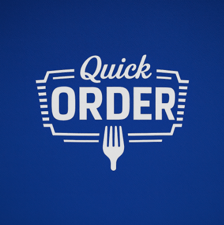

Manuel Varo Pérez
Idea 1

Nombres sugeridos
• QuickOrder
• BlitzBite
Nombre elegido: QuickOrder
Eslogan
“Tu hambre va rápido. Nosotros más.”
Página Web del proyecto empresarial del grupo. Sector profesional: Informática · IA · Diseño. Idea principal elegida: FoodFlow, sistema unificado de gestión de pedidos para comercios de comida rápida.
Datos del grupo
Sector profesional del grupo: Informática · IA · Diseño
Miembros del grupo:
IDEA:
QuickOrder – Sistema unificado de gestión de pedidos para comida rápida
Actividad de la empresa
Plataforma digital que centraliza en un único panel todos los pedidos de un comercio de comida rápida (tiendas de pollos, kebabs, pizzerías, etc.) procedentes de mostrador, teléfono, WhatsApp, redes sociales y web. Incluye pantalla de cocina para organizar tiempos de preparación.
Cliente objetivo
Propuesta de valor
Objetivos en 1 año
ODS relacionado
ODS 8 · Trabajo decente y crecimiento económico
ODS 9 · Industria, innovación e infraestructura
Valor que aporta a los ODS
QuickOrder ayuda a que los pequeños comercios sean más eficientes y competitivos, mejorando su organización interna y reduciendo el estrés del personal en horas punta (ODS 8). Además, introduce soluciones de digitalización e innovación tecnológica en negocios tradicionales, impulsando la modernización de su infraestructura digital (ODS 9).
• QuickOrder
• BlitzBite
Nombre elegido: QuickOrder
“Tu hambre va rápido. Nosotros más.”
• CentralFOOD
• Pedio
Nombre elegido: CentralFOOD
“Porque pedir debería ser simple.”
• FoodFlow
• Comanda360
Nombre elegido: FoodFlow
“Todo fluye. Todo llega. Todo sabe.”
FoodFlow
“Porque pedir debería ser simple.”